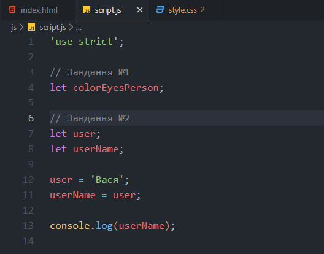

Основы синтаксиса JAVASCRIPT
Завдання 1
- Варіант 1: Все вірно
- Варіант 2: Все вірно
- Варіант 3: Синтаксична помилка, немає крпаки з комою " ; "
- Варіант 4: Синтаксична помилка, незакриті лапки "Правило 0 - все що відкрито повинно бути закртим"
Переменные в JAVASCRIPT
Завдання 1 - 2

Завдання 3
- Варіант 1: Синтаксична помилка, немає крпаки з комою " ; "
- Варіант 2: Все вірно
- Варіант 3: Не вірно названа змінна, тому що виконуються обчислення
- Варіант 4: Вірно задана назва змінної, тому що її вміст відомо заздалегіть
- Варіант 5: Все спрацює, але зараз не бажано використовувати змінну "var"
Типы данных JAVASCRIPT
- Варіант 1: Помилка - потрібно використовувати зворотні лапки
- Варіант 2: Помилка - при діленні на нуль повернеться значенния Infinity (бескінечність)
- Варіант 3: Помилка - тип даних буде "undefined"
- Варіант 4: Все вірно